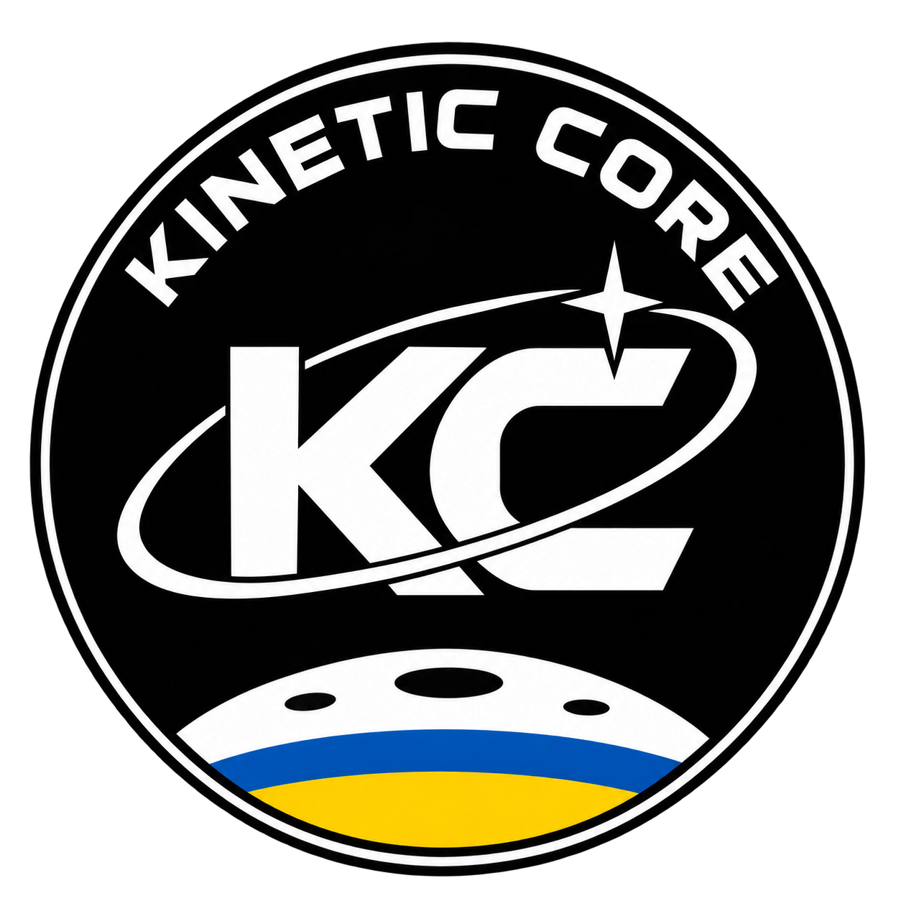
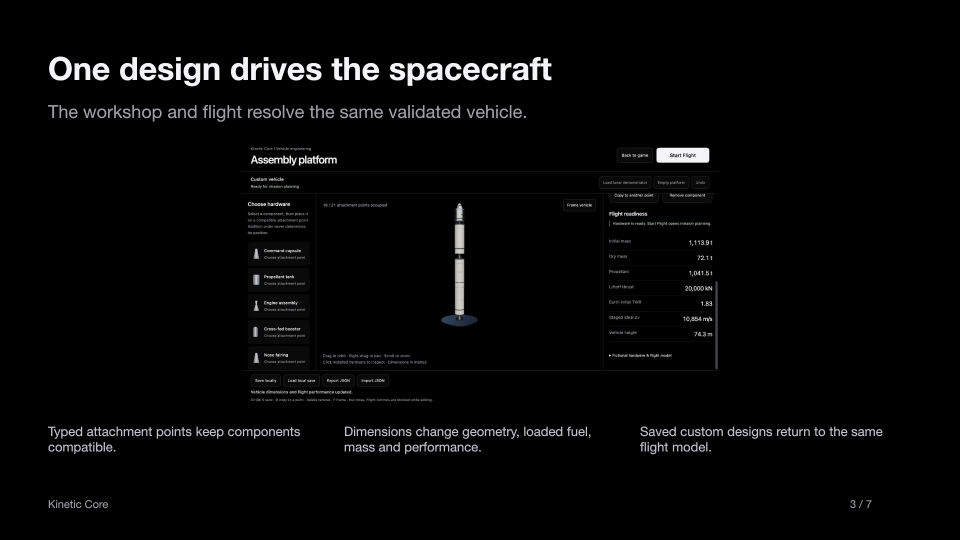

Cover concepts
Three new scenes, generated from the original portrait and KC emblem.
Shadowline
Recommended for the presentation. A fresh lunar portrait with anamorphic LED streaks, a softly blurred background and fine cinematic grain. Kinetic Core and Mykyta remain clear.


Compare all three covers
A mission emblem for Kinetic Core
KC, an orbit and a lunar horizon, with a Ukrainian blue-and-yellow accent.



The original transparent PNG is the main badge. Editable vector companions provide a smaller KC mark, wordmark and a 3:5 flag layout. These share the identity rather than claiming to be an exact trace of the generated badge.


The presentation is ready to fill
Seven slides, editable text, screenshot slots and source-backed physics notes.

From design to flight
Cover, mission concept, spacecraft builder, Earth-to-Moon flight, terminal docking, mathematical checks and closing.
Six existing game captures are included as references. Eight capture slots track what to replace or add from the final build. Local image upload, slide editing and draft export work without sending project material to another service.
A consistent design system
Apple system typography, true black and a single shared scale.
The portrait carries the emotion.
The typography gives it room.
- Project title
- Kinetic Core
- Only author credit
- Created by Mykyta Borisov
- Canvas
- 1920 × 1080, 16:9
- Grid
- 12 columns, 32 px gutters
- Safe edge
- 96 px on every side
- Spacing rhythm
- 8, 16, 24, 32, 48, 64, 96 px
Color
Blue identifies navigation and focus. Natural Earth color provides the photographic accent. Status colors are reserved for actual outcomes.
Typography
Mykyta Borisov
| Role | Size at 1920 px | Weight | Use |
|---|---|---|---|
| Project title | 144 px | 650 | Kinetic Core on the cover |
| Section title | 96 px | 600 | Chapter opening / current challenge heading |
| Heading | 64 px | 600 | Slide topic |
| Lead | 42 px | 400 | One central statement |
| Body | 32 px | 400 | Short explanation |
| Event / author | 28 px | 500 / 400 | Cover metadata |
| Label | 24 px | 500 | Table headings |
| Caption | 22 px | 400 | Sources and footnotes |
SF via the Apple system font on macOS and iOS. Platform fallback elsewhere. No font files or remote font services are bundled. Sizes refer to the full slide canvas, before proportional preview scaling.
Ready for the next pages
Reusable layout masters, with placeholders until the game is ready.
Cover + five content masters. These are layout templates, with no claims about completed gameplay, mission results or award status.
Photographic direction
Mykyta stays recognizable and the same age, with a natural head turn and scene-specific facial lighting. Cool-gray shadows, directional sunlight, a clear visor and believable head-to-suit proportions integrate the portrait into the lunar setting.
Modern lunar EVA suit
A fictional suit informed by the contemporary AxEMU silhouette. White technical textile, charcoal joints, burgundy bands, seam wear and fine scuffs. Compact neutral-white helmet task lights, cable routing and tether hardware add practical detail. The circular KC mission patch includes a small Ukrainian blue-and-yellow horizon; the handwritten Space Apps 2026 event note remains.
Editable type
Cover titles, event names and author credits remain separate from the photographic suit details, editable in HTML, CSS and PowerPoint.
Keep the whole design
Local source files and finished covers, ready to reuse.


References and source files
Event: NASA Space Apps Challenge 2026. Challenge: Space Mission Design Game. The game is named Kinetic Core, with Mykyta Borisov as its sole author.
Suit direction: contemporary AxEMU references. All current images use the supplied portrait with contextual lunar lighting and retain the same apparent age. Practical helmet lights are small, neutral-white and physically mounted.
Technical image provenance, source references and production details are saved in sources.json, image-prompts.json and PowerPoint speaker notes. The private cover revision has no visible provenance caption, as requested. This is a custom local HTML/CSS preview.